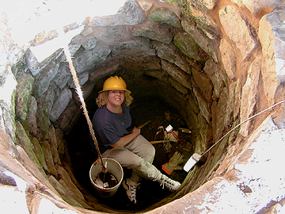

CSU Monterey Bay student Casey Ferrito
is here pictured working at the depth of 2.5 meters in the Old Mission
well (Feature 1).
During the Fall 2000 semester,
much progress was made in determining the date at which the well was backfilled
for the last time.
Photo copyright Ruben G. Mendoza,
2000.
Fall 2000 Spring 2001
Spring 2001: The principal area of excavation at this time is centered on the outer portrion of the exterior wall of the Southwest Convento wing of the Old Mission Quadrangle. Secondary efforts are directed at the continuing recovery of artifacts and the exposure of the original mission well. The current efforts are being undertaken by SBSM 397 (Independent Study: Field Archaeology) students and project volunteers.
Fall 2000: Excavations during the Fall of 2000 were directed at (a) the excavations of the outer portrion of the exterior wall of the Southwest Convento wing of the Old Mission Quadrangle, (b) the interior corner (wall foundation) of the western-most portion of the Old Mission Quadrangle, (c) the exterior portion of the Feature 4 (Torreon) wall foundation located at the southernmost portion of the Old Mission Quadrangle, and (d) the continuing recovery of artifacts and the exposure of the original mission well. These objectives were the product of the conjoined efforts of the SBSD 224s/324s (Archaeology: Map to Museum -- project option), and SBSD 250s/350s (Archaeology of a California Mission) students. [Schedule]